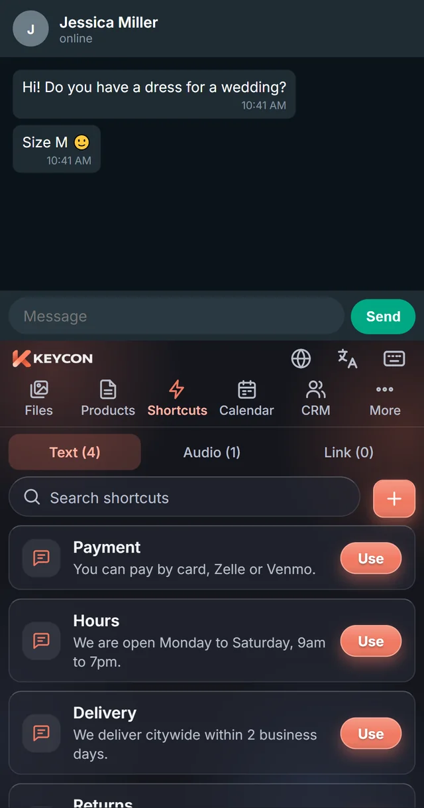

How to Reply to Customers Faster: 9 Habits for Selling by Text and WhatsApp
When a customer messages you, they are often messaging two or three other sellers at the same time. The first person who sends a clear, useful answer usually gets the conversation. Here is how to be that person, every time, without living glued to your phone.
Selling by chat changed what “good service” means. In a store, the customer waits in front of you. In a chat, they wait with three other tabs open. A slow reply isn't just a delay: it's an invitation to go somewhere else.
The good news is that speed is mostly a matter of preparation, not effort. Sellers who reply fast aren't typing faster. They have simply stopped writing the same things from scratch. These nine habits show you how.
1. Treat the first reply as its own task
The first reply has one job: show the customer that a real person is on it. It doesn't need to answer everything. A short, specific message sent in one minute beats a perfect message sent in an hour.
Example
Hi Sarah! Thanks for reaching out about the 3-bedroom on Oak Street. I'm pulling the photos and details for you now.
That message buys you a few minutes to gather information, and the customer is far less likely to keep shopping while they wait.
2. Write your best answers once
Look at your last 50 conversations. You will find the same ten or fifteen questions again and again: price, availability, hours, payment methods, delivery, returns, location. Each of those deserves one great answer, written calmly, checked for typos and saved.
Saved replies are not lazy. They are your best version, on demand. You still read the customer's message and adjust a word or two when needed, but you stop reinventing the explanation of your return policy for the hundredth time.
For a starter set, see our sales message templates you can copy.
3. Answer with the product, not a description of it
“Yes, we have it in blue” is an answer. A photo of the blue one with the price and size underneath is a sale in progress. Customers decide with their eyes, and every extra question (“how much is it?”, “do you have a picture?”) is another round trip where they might lose interest.
Keep a ready-to-send version of each product or service: the best photo, the price, the two or three details people always ask about, and a link if you have one. When someone asks, send the whole package at once.
4. Stop hunting through your camera roll
A surprising share of reply time goes to searching: scrolling the gallery for the right photo, digging through old chats for the price you quoted last week, opening notes to find the address. None of that is selling.
Organize what you send into folders by product or category, and keep them close to where you type. The fewer apps you switch between in the middle of a conversation, the faster and calmer you reply.
5. Use voice notes for warmth, text for facts
A short voice note feels personal and builds trust, especially for a first contact or a follow-up. But prices, addresses, links and specifications belong in text, where the customer can find them later without replaying audio. A good pattern: a friendly voice note followed by one text message with the facts.
6. End every reply with a next step
Conversations stall when nobody knows what happens next. Close your messages with one simple, specific question or offer:
- “Would you like to see it Saturday at 10 or 2?”
- “Should I reserve the medium for you until tomorrow?”
- “Want me to send the payment link?”
One question, easy to answer. Not three options and a paragraph.
7. Know where each customer is
When you sell all day by chat, conversations blur together. Who asked for a quote? Who said “I'll think about it”? Who is ready to pay? Without a simple way to track this, warm leads go cold simply because you forgot them.
You don't need complex software. You need a short list of stages (for example: new, interested, negotiating, closed) and a quick way to move each customer between them. Then, once a day, look at who is stuck and send them a nudge.
8. Follow up once, kindly, with something new
Most sales that don't close aren't a “no”. They're a “not now” that nobody followed up on. A good follow-up adds something: a new photo, a price update, an answer to a doubt they had, or a simple question about timing.
Example
Hi Mark, the gray sofa you liked is back in stock and we can deliver it this Friday. Want me to hold one for you?
Avoid “just checking in”. It asks for attention without giving anything in return.
9. Set expectations for after hours
Replying fast doesn't mean replying at midnight. Put your hours where customers can see them, and have a saved after-hours message that tells people when you'll be back and what they can send you in the meantime. Customers are patient when they know what to expect. They leave when they're ignored.
Put it all one tap away
All of these habits share one idea: prepare once, reuse often. The last obstacle is friction. If your saved replies live in a notes app and your product photos live in the gallery, you're still switching apps a dozen times a day.
That's the problem KEYCON was built to solve. It is a phone keyboard with your products, saved replies and customers inside it. You stay in the chat (WhatsApp, Messenger, Instagram, text or email), open the keyboard menu and send the product card, the photo or the answer with one tap.

Quick summary
- Send a short, specific first reply right away.
- Write your best answers once and reuse them.
- Reply with the product: photo, price and key details.
- Keep what you send organized and close to where you type.
- Voice for warmth, text for facts.
- End with one clear next step.
- Track each customer's stage.
- Follow up once, with something new.
- Set expectations for after hours.